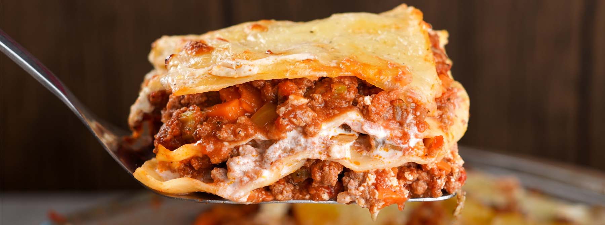

Loaf Tin Lasagne

Description
Lasagne! Zin in lasagne, maar wil je geen hele bak met spullen maken? Probeer Loaf tin Lasagne! Je krijgt gemakkelijk 4 eenvoudige porties voor een meal prep van 4 dagen. Deze loan tif lasagne is de ultieme eiwitrijke meal prep voor als je zin hebt in je favoriete pasta maaltijd.
Ingredients
- Lasagne bladen
- Tomatensaus
- Gemalen kaas
- Gehakt
- Cottage Cheese
- Eieren
Steps
- Verwarm de oven tot 180 graden.
- Bak het gehakt gaar. Voeg de tomatensaus toe en laat 10 minuten sudderen
- Klop de cottage cheese en eieren samen.
- Leg een laag lasagne vellen onder aan een schotel.
- Verdeel er tomatensaus over.
- Verdeel een laag cottage cheese mengsel erover.
- Leg een laag lasagne vellen.
- Nog 1 maal tomatensaus, cottage cheese en lasagnevellen.
- Leg hier een laag gemalen kaas over.
- Bak in de voorverwarmde oven voor 40 minuten.